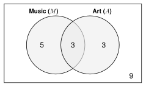
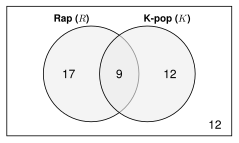

Unit 6 Review
A class has 20 students. 8 are in the music club (\(M\)). 6 are in the art club (\(A\)). 3 are in both clubs.
Pick a student at random. Is the student in music or art? In music and art? In art, if you know the student is in music? Every rule from Unit 6 answers a question about this one class.
This review uses all of them. It has every kind of problem on the Unit 6 quiz, with more of each.
probability, complement, union, intersection, Venn diagram, addition rule, mutually exclusive, independent events, dependent events, multiplication rule, conditional probability, two-way table, tree diagram, theoretical probability, experimental probability, law of large numbers, simulation, trial, counting principle, factorial, permutation, combination
Printable review - notes and practice problems to print and write on.
Khan Academy: Unit 6, Lesson 1: Venn diagrams and the addition rule; Unit 6, Lesson 2: Multiplication rule for probabilities; Unit 6, Lesson 3: Conditional probability; Unit 6, Lesson 4: Probability from simulations; Unit 6, Lesson 5: Permutations; Unit 6, Lesson 6: Combinations; Unit 6, Lesson 7: Probability using combinatorics
👥 Learn Together
6.1 - Add for “Or”

Add the two groups. Then subtract the overlap, because it was counted twice.
\[ P(M \cup A) = P(M) + P(A) - P(M \cap A) = \frac{8}{20} + \frac{6}{20} - \frac{3}{20} = \frac{11}{20} = 0.55 \]
- \(\cup\) means or. \(\cap\) means and.
- Complement: \(P(\text{not } M) = 1 - \frac{8}{20} = \frac{12}{20} = 0.6\)
- Music and art are not mutually exclusive. 3 students are in both.
6.2 - Multiply for “And”
Pick a student on Monday and on Tuesday. The same student can be picked twice. The picks are independent.
\[ P(M, M) = \frac{8}{20} \cdot \frac{8}{20} = 0.16 \qquad P(\text{at least one } M) = 1 - 0.6 \cdot 0.6 = 0.64 \]
Pick 2 different students. Now 7 of the 19 students left are in music. The picks are dependent.
\[ P(M, M) = \frac{8}{20} \cdot \frac{7}{19} = \frac{56}{380} = \frac{14}{95} \approx 0.15 \]
6.3 - Look Inside the Group
\(P(A \mid B)\) is the probability of \(A\) given \(B\). Look only at the \(B\) group.
Look only at the 8 music students. 3 of them are in art.
\[ P(A \mid M) = \frac{3}{8} = 0.375 \qquad \text{but} \qquad P(A) = \frac{6}{20} = 0.3 \]
They are different, so being in music and being in art are not independent.
6.4 - Simulate
\(P(M) = 0.4\). Digits 0 to 3 = music (4 of the 10 digits). One trial = 2 digits (Monday, Tuesday).
| Trial | 1 | 2 | 3 | 4 | 5 | 6 | 7 | 8 | 9 | 10 |
|---|---|---|---|---|---|---|---|---|---|---|
| Digits | 91 | 74 | 00 | 29 | 75 | 50 | 47 | 36 | 88 | 13 |
| Music both days? | no | no | yes | no | no | no | no | no | no | yes |
Experimental: \(\frac{2}{10} = 0.2\). Theoretical: \(0.4 \cdot 0.4 = 0.16\).
The more trials you do, the closer the experimental probability gets to the theoretical probability.
6.5 - Count Arrangements
The 8 music students choose a leader, a helper, and a note-taker. The jobs are different, so order matters. This is a permutation.
\[ {}_8P_3 = \frac{8!}{5!} = 8 \cdot 7 \cdot 6 = 336 \text{ ways} \]
\(n!\) (“\(n\) factorial”) means \(n \cdot (n - 1) \cdots 2 \cdot 1\).
6.6 - Count Groups
Choose 3 of the 8 music students to play at a school event. They all have the same job, so order does not matter. This is a combination.
\[ {}_8C_3 = \frac{8!}{3!\,5!} = \frac{336}{3!} = \frac{336}{6} = 56 \text{ groups} \]
Ask: if I switch the order, is it a different result? Different jobs: permutation. Same job: combination.
6.7 - Count to Find a Probability
The 3 players are chosen at random. What is the probability that all 3 are also in art?
Only 3 music students are in art, so \({}_3C_3 = 1\) group works. Count all the groups the same way: \({}_8C_3 = 56\).
\[ P(\text{all 3 in art}) = \frac{1}{56} \approx 0.02 \]
✍️ Practice On Your Own
Work with a partner. Compare answers when you finish each problem.
6.1 - Venn Diagrams and the Addition Rule
50 students said if they listen to rap (\(R\)) and if they listen to K-pop (\(K\)).

Find \(P(R)\).
Find \(P(\text{not } R)\).
Find \(P(K)\).
What does \(R \cap K\) mean in words? Find \(P(R \cap K)\).
What does \(R \cup K\) mean in words? Find \(P(R \cup K)\).
Find \(P(\text{neither})\).
Find \(P(\text{rap only})\).
Explain why \(P(R \cup K) + P(\text{neither}) = 1\).
\(P(A) = 0.45\), \(P(B) = 0.3\), and \(P(A \cap B) = 0.1\). Find \(P(A \cup B)\).
\(A\) and \(B\) are mutually exclusive. \(P(A) = 0.25\) and \(P(B) = 0.35\). Find \(P(A \cap B)\) and \(P(A \cup B)\).
In a class of 32 students, 15 take choir (\(C\)), 12 take band (\(B\)), and 5 take both.
Draw and fill in a Venn diagram.
Use the addition rule to find \(P(C \cup B)\).
Roll a number cube (1 to 6). Are the events mutually exclusive? Find the probability.
a 2 or a 5
an even number or a number greater than 3
Draw one card from a deck of 52. Are the events mutually exclusive? Find the probability.
a diamond or a black card
a red card or a queen
6.2 - The Multiplication Rule
A soccer player scores on 75% of her penalty kicks. The kicks are independent. She takes 2 kicks.
Find \(P(\text{scores both})\).
Find \(P(\text{misses both})\).
Find \(P(\text{scores at least one})\).
Spin a spinner with 3 equal parts (red, blue, green). Then roll a number cube.
- Find \(P(\text{red} \cap 6)\).
A quiz has 3 questions. Each question has 5 choices. You guess on all 3.
Find \(P(\text{all 3 right})\).
Find \(P(\text{at least one wrong})\).
Find \(P(\text{all 3 wrong})\).
Find \(P(\text{at least one right})\).
A jar has 7 red beads and 3 blue beads. You take 2 beads without looking.
You put the first bead back before you take the second. Find \(P(\text{red, red})\).
You keep the first bead out. Find \(P(\text{red second} \mid \text{red first})\).
You keep the first bead out. Find \(P(\text{red, red})\).
You keep the first bead out. Find \(P(\text{blue, blue})\).
You keep the first bead out. Find \(P(\text{red first, then blue})\).
\(P(A) = 0.5\) and \(P(B \mid A) = 0.3\). Find \(P(A \cap B)\).
Independent or dependent? Explain.
Roll a number cube two times.
Choose 2 different students from a class to read aloud.
6.3 - Conditional Probability
120 students said if they have a library card and if they read for fun.
Reads for fun Does not Total Library card 36 24 60 No library card 18 42 60 Total 54 66 120 Find \(P(\text{reads})\).
Find \(P(\text{reads} \mid \text{library card})\).
Find \(P(\text{library card} \mid \text{reads})\).
Find \(P(\text{reads} \mid \text{no library card})\).
Find \(P(\text{no library card} \mid \text{does not read})\).
Are reading for fun and having a library card independent? Explain.
80 students said if they are left-handed and if they play an instrument.
Instrument No instrument Total Left-handed 6 14 20 Right-handed 18 42 60 Total 24 56 80 Find \(P(\text{instrument} \mid \text{left-handed})\).
Are being left-handed and playing an instrument independent? Show your work.
75% of students do their homework online. 25% do it on paper. 90% of online homework is turned in on time. 70% of paper homework is turned in on time.
Draw a tree diagram. Fill in every probability and multiply along each path.
Find \(P(\text{online} \cap \text{on time})\).
Find \(P(\text{on time})\).
Find \(P(\text{late})\) two ways.
The homework was on time. Find \(P(\text{paper} \mid \text{on time})\).
The homework was late. Find \(P(\text{online} \mid \text{late})\).
Find \(P(\text{on time} \mid \text{paper})\). Where on the tree do you see it?
6.4 - Simulations
A number cube is rolled 60 times.
Number 1 2 3 4 5 6 Times rolled 8 12 9 7 10 14 Find the experimental probability of a 6.
Find the theoretical probability of a 6.
Find the experimental probability of an even number.
Find the theoretical probability of an even number.
Why are the experimental and theoretical probabilities different?
The cube is rolled 6,000 times. What number do you expect the experimental probability of a 6 to be close to? Why?
Theoretical or experimental? Explain.
It rained on 12 of the last 30 days, so \(P(\text{rain}) = \frac{12}{30} = 0.4\).
A spinner has 8 equal parts, so the probability of each part is \(\frac{1}{8}\).
A seed sprouts 80% of the time. Plant 3 seeds. Simulate: digits 0 to 7 = sprouts. Digits 8 and 9 = does not sprout. One trial = 3 digits (3 seeds).
Why do the digits 0 to 7 stand for a seed that sprouts?
Use these random digits to run 10 trials. Count the seeds that sprout in each trial.
17118 89032 50415 68007 77585 15165Estimate \(P(\text{all 3 sprout})\).
Estimate \(P(\text{exactly 2 sprout})\).
The theoretical probability that all 3 sprout is \(0.8 \cdot 0.8 \cdot 0.8 = 0.512\). How could you make your estimate closer?
How would you assign random digits to simulate each event?
A player makes 90% of her free throws.
An event with \(P = 0.15\).
A spinner with 3 equal parts: red, blue, and green.
6.5 - Permutations
Find each value.
\(6!\)
\(\dfrac{9!}{7!}\)
\(0!\)
A video game character has 5 hair styles, 4 shirts, and 3 hats. How many different characters can you make?
A school ID has 2 letters (A to Z) and then 3 digits (0 to 9). Letters and digits can repeat. How many IDs are there?
In how many ways can 8 students line up for a photo?
In how many ways can you arrange the letters of the word PLANT?
Find \({}_7P_2\).
Find \({}_9P_4\).
11 students run for president, vice president, secretary, and treasurer. In how many ways can the 4 jobs be filled?
7 swimmers are in a race. In how many ways can gold, silver, and bronze medals be given?
A bike lock code has 5 digits (0 to 9).
How many codes are there if digits can repeat?
How many codes are there if no digit repeats?
A code has 3 letters. Each letter is a vowel (A, E, I, O, U). Repeats are allowed. How many codes are there?
Which count is a permutation, (e) or (f)? Explain.
6.6 - Combinations
Find each value.
\({}_7C_2\)
\({}_9C_3\)
\({}_{10}C_4\)
\(\dbinom{6}{5}\)
15 people meet. Each person shakes hands once with every other person. How many handshakes are there?
You choose 5 of 12 songs to download. In how many ways can you choose them?
A salad bar has 8 toppings. A salad has 4 different toppings. How many different salads are there?
For each situation, write permutation or combination. Then find the number of ways.
Choose 4 of 14 students to carry a banner.
Give gold, silver, and bronze medals to 3 of 14 dancers.
Choose a captain and a co-captain from 16 players.
Choose 2 of 16 players to carry the water.
Arrange 6 pictures in a row on a wall.
Choose 3 of 13 books to read this summer.
Why is the answer to (c) 2 times the answer to (d)?
Which situation is a permutation?
A. Choosing 3 of 20 students to go on a field trip.
B. Choosing 4 of 10 songs to download.
C. Choosing the first, second, and third chair from 9 violin players.
D. Choosing 2 of 6 colors to paint a room.
6.7 - Probability with Counting
A playlist has 10 songs: 6 rap songs and 4 K-pop songs. The app picks 3 songs at random. Order does not matter.
How many groups of 3 songs are possible?
Find \(P(\text{all 3 are rap})\).
Find \(P(\text{all 3 are K-pop})\).
Find \(P(\text{not all 3 are rap})\).
A club has 13 members: 5 seniors and 8 juniors. 2 members are chosen at random to go to a meeting.
How many pairs are possible?
Find \(P(\text{both seniors})\).
Find \(P(\text{both juniors})\).
Find \(P(\text{one senior and one junior})\).
20 students are in a class. Does order matter? Find the probability.
The teacher picks 2 students at random. One reads aloud and one writes on the board. What is the probability that Ana reads and Ben writes?
The teacher picks 2 students at random to hand out papers. What is the probability that Ana and Ben are picked?
Why is the answer to (b) 2 times the answer to (a)?
A playlist of 6 songs plays in a random order. What is the probability that the songs play in the order you like best?
A 4-digit locker code uses the digits 1 to 8 with no repeats. The code is chosen at random. What is the probability that the code is 1357?
A student says, “3 of 10 people win the same prize. Order matters, so the probability that Ana, Ben, and Carla win is \(\frac{1}{720}\).” Is the student right? Explain.
Test-Style Questions
A test asks the same questions with more words. Read slowly. Choose the best answer.
In a group of 60 students, 28 are on a sports team, 22 are in a club, and 10 are both on a sports team and in a club. A student is selected at random from the group. What is the probability that the student is on a sports team or in a club?
A. \(\frac{1}{6}\)
B. \(\frac{1}{2}\)
C. \(\frac{2}{3}\)
D. \(\frac{5}{6}\)A school has two copy machines that work independently of each other. On any given day, the probability that the first machine is broken is 0.1, and the probability that the second machine is broken is 0.2. What is the probability that at least one of the machines works on a given day?
A. 0.02
B. 0.28
C. 0.72
D. 0.98The two-way table shows the results of a survey of 90 students about their favorite type of movie. A student from the survey is selected at random. Given that the student is in 12th grade, what is the probability that the student prefers action movies?
Action Comedy Total 11th grade 20 25 45 12th grade 30 15 45 Total 50 40 90 A. \(\frac{1}{3}\)
B. \(\frac{5}{9}\)
C. \(\frac{3}{5}\)
D. \(\frac{2}{3}\)The probability of rain is 30% on each of the next 5 days. A student wants to use a simulation to model whether it rains on one of these days. Which simulation can the student use?
A. Pick a random digit from 0 to 9. The digits 0, 1, and 2 mean rain.
B. Pick a random digit from 0 to 9. The digits 0, 1, 2, and 3 mean rain.
C. Roll a number cube. The numbers 1 and 2 mean rain.
D. Flip a coin. Heads means rain.How many different 4-letter arrangements can be made from the letters in the word SPORT if no letter can be used more than once?
A. 5
B. 24
C. 120
D. 625A student council has 12 members. A committee of 4 members will be selected from the council. How many different committees of 4 members are possible?
A. 48
B. 495
C. 11,880
D. 20,736A teacher will randomly select 2 students from a group of 4 juniors and 6 seniors. What is the probability that both students selected are juniors?
A. \(\frac{1}{15}\)
B. \(\frac{2}{15}\)
C. \(\frac{4}{25}\)
D. \(\frac{2}{5}\)